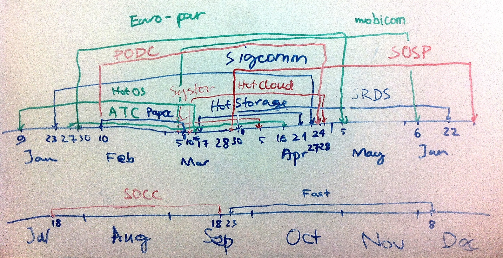

Conference Timeline
Appreciation to anyone that can help me to change this image into an interative webpage with the following features:
- Add/Remove a conference
- When a conference is selected, the others will be unavailable (grayed out); this is for detecting double submissions
- Manage by publications: different publications have different timeline
